Цвет
- colorscheme.ru - Цветовой круг
- Adobe Color - Цветовые схемы от Adobe
- palettable - Подборка цвета с помощью ИИ
- colordesigner - Миксер цветов
Готовые цветовые схемы
- colrd - Готовые цветовые схемы
- culrs - Готовые цветовые схемы 2
- colorleap - Готовые цветовые схемы 3
- shapefactory - Готовые цветовые схемы 4
Генераторы цветовых схем
- Color Palette Generator - Генератор цветовых схем
- colorhexa - Генератор цветовых схем 2
- webfx - Генератор цветовых схем 3
Плоские цвета
- flatcolors - Flat colors
- getuicolors - Flat colors 2
- flatuicolorpicker - Flat colors 3
- materialpalette - Flat colors Material-UI
Градиенты
- gradienthunt - Градиенты
- webkul - Градиенты 2
Рекомендации
- Для ФОНОВ лучше чередовать блоки с белым, светло-серым и темными цветами
- Для АКЦЕНТОВ лучше яркие или холодные цвета (кнопки, ссылки, логотипы, важные заголовки, фразы, цитаты, акции, предложения)
- СИНИЙ и ЗЕЛЁНЫЙ - используется практически в 80% сайтов
- По сути в дизайне должно быть 3-5 цветов (два контрастных цвета для фона и текста, акцентарный для выделения активных элементов кнопок, ссылок, заголовков и т.д. и вспомогательные для контраста с акцентным)
- Если хотите сделать цветовой акцент на каком-то элементе сайта (чаще всего кнопке), то выберите один основной яркий цвет. Остальные цвета не должны ему мешать, а, наоборот, должны оттенять его.
- Для фона лучше всего использовать светлый цвет (белый, светло-серый и светло-бежевый), это не позволит глазам пользователя быстро устать.
- Цвет не должен “резать глаз”, он должен быть приятным глазу и погружать в атмосферу.
- Для того, чтобы текст хорошо читался, делайте его контрастным по отношению с фону. Если вы используете светлый фон, то текст набирайте темным (черным или темно-серым) - кэп ОЧЕВИДНОСТЬ.
- БЕЛЫЙ ФОН или много белого цвета на главном экране лучше не использовать, смотрится слишком просто
- Не стоит злоупотреблять цветом!!! Не должно быть много цветастости, это сильно отвлекает пользвателей!
Сколько цветов?
По сути, должно быть всего 3 цвета
- СВЕТЛЫЙ - для фона
- ТЁМНЫЙ - для текста
- АКЦЕНТНЫЙ - для акцентов
Но имея три цвета мы можем получить еще дополнительные цвета, используя ваиации основных цветов
- СВЕТЛО-СЕРЫЙ (условно) - тёмная вариация СВЕТЛОГО ЦВЕТА
- ТЁМНО-СЕРЫЙ (условно) - светлая вариация ТЁМНОГО текста
- АКЦЕНТНЫЙ-СВЕТЛЕЕ - светлая вариация АКЦЕНТНОГО ЦВЕТА
- АКЦЕНТНЫЙ-ТЕМНЕЕ - тёмная вариация АКЦЕНТНОГО ЦВЕТА
В итоге в цветовой схеме получаем 3 основных цвета + 4 дополнительных оттенка.
Если у заказчика есть корпоативные цвета, то нужно выбрать основной цвет из них.
Для некоторых блоков можно использовать ИНВЕРCИЮ цветов, когда цвета фона и текста меняются местами (часто для футера).
Выбор основного АКЦЕНТНОГО цвета
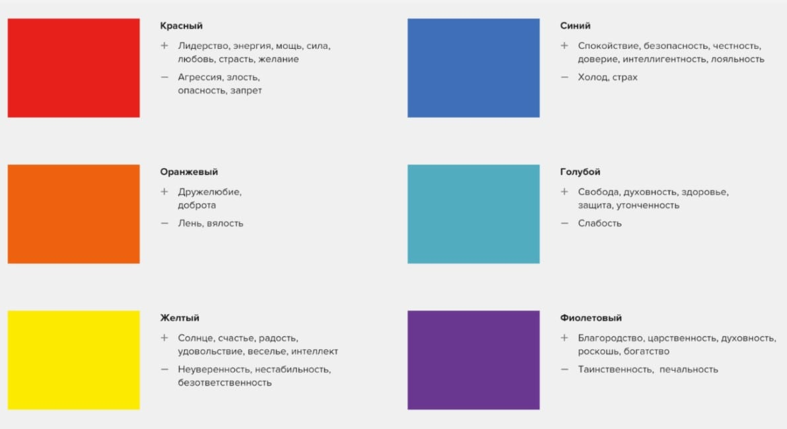
-
Основной цвет соответствующей эмоции. Придерживайтесь одного цвета. Это означает применение черного, белого и еще одного темного цвета. Используйте новый цвет для выделения важного конструк- тивного элемента, например подзаголовков в статье. Web-сайт журнала "Time" применяет фирменный красный цвет для некоторых ссылок и фрагментов текста.
-
Применяйте едва окрашенные фоны светлых оттенков. Порой слабый акварельный фон — все, что нужно для оживления сайта. Например, легкий бронзовый или золотистый цвета могут придать элегантность и изысканность (см. сайт библиотеки Гарвардского университета по адресу
http://lib.harvard.edu). Светло-розовые или желтые тона могут подготовить посетителей к покупке ночных рубашек или другой женской одежды на сайте Victoria's Secrethttps://www.victoriassecret.com/ru/. -
Используйте текст в прямоугольной рамке. Web-дизайнеры часто применяют закрашенные прямоугольники для выделения важных областей Web-страницы (посмотрите в Википедии вот эту страницу
http://en.wikipedia.org). Чуть позже в этой главе вы узнаете, как создавать прямоугольные рамки. -
С осторожностью пользуйтесь белым текстом. Белый текст на черном или темно- синем фоне может быть поразительным — его очень трудно читать. Практическое правило гласит: избегайте его, если не стремитесь создать футуристический, нетрадиционный и сумрачный облик вашего Web-сайта. (Даже если вы попадаете в одну из этих категорий, можно добиться большего эффекта с помощью белого фона и нескольких хорошо подобранных графических изображений с эффектными волнующими цветами.)
Тёплые цвета
КРАСНЫЙ
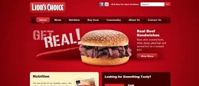
Лучший или универсальный акцентатор. Не переборщите с красным. Белый на красном - праздник.
-
РОЗОВЫЙ (pink) - более спокойный, модный, гламур
-
ЯРКО-РОЗОВЫЙ (deeppink) - дерзкий, вызывающий, вульгарный, модный, косметика.
-
КОРАЛОВЫЙ (#ff7369) - более спокойный, туризм
-
БОРДОВЫЙ (maroon) - более контрастный и спокойный, менее яркий
-
Яркий (Вызывающий)
-
Энергичный
-
Лидерский (Смелый)
-
Сильный, воинственный
-
Открытый
-
Полный решимости
-
Усиливает вкус и аппетит
-
Фаст-фуд, Coca-cola, McDonalds, Магнит, МТС, М-Видео, Альфа-Банк
ОРАНЖЕВЫЙ
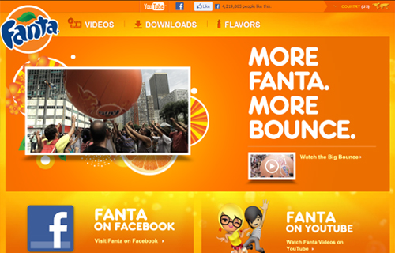
Если нужно много акцента, то лучше использовать оранжевый вмест�о красного
- Дружественный
- Еда
- Здоровье
- Жизнь
- Осенняя погода
ЖЁЛТЫЙ
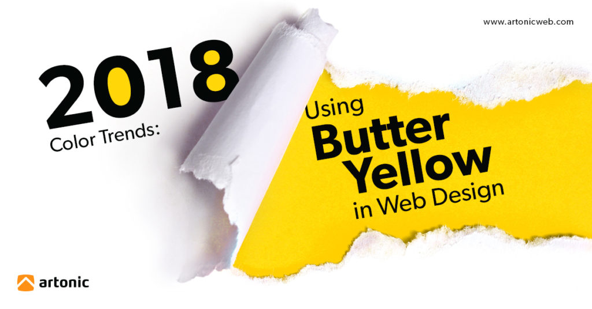
Чёрный на жёлтом - акцентирует внимание, символизирует точность, чёткость. Желтый на красном усиливается, становиться энергичнее. Желтый на белом теряется. Красный + зелёный.
- Тёплый
- Позитивный
- Солнечный
- Жизнерадостный
- Символизирует тепло, счастье
- Радость
- Веселье
- Спорт
- Детство
Холодные цвета
ЗЕЛЁНЫЙ
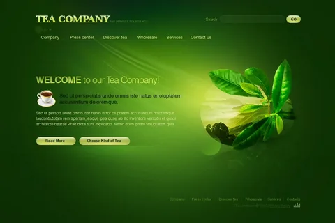
-
ЯРКО-ЗЕЛЕНЫЙ (lightgreen) - мятный, молодость, йога, спорт, природа.
-
ЖЁЛТО-ЗЕЛЕНЫЙ (yellowgreen) - тёплый и природный
-
ОЛИВКОВЫЙ (olive) - более универсальный (хорошо сочетается с черным цветом).
-
ТЁМНО-ЗЕЛЕНЫЙ (darkgreen) - консерватизм, взрослое, серъезное.
-
TIFFANY (#0abab5) (тренд 2017-2018, зелёно-синий).
-
На втором месте после синего по популярности
-
Финансы, деньги.
-
Природный, Экологичный, Натуральный, Летний
-
Спокойствие, Безопасность, Открытость, Разрешенность
-
ПРОЦВЕТАНИЕ
СИНИЙ
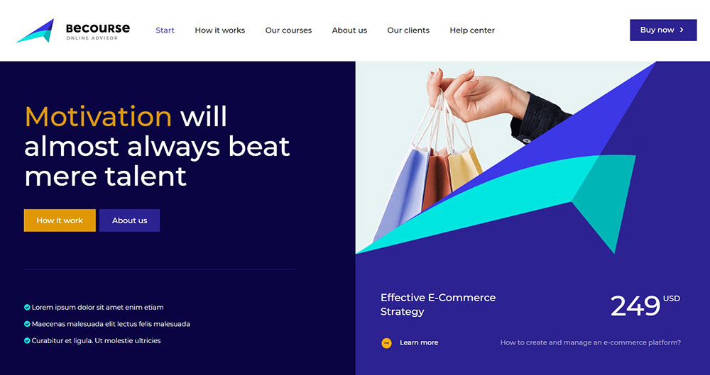
- ЯРКО-СИНИЙ, ГОЛУБОЙ (lightblue) - профессионалим, солидность, престижность.
- СИНЕ-ЗЕЛЕНЫЙ (cyan) - морской, циан, ядовито-синий, бирюзовый
- ТЁМНО-СИНИЙ (darkblue) - профессионалим, солидность, престижность.
- Самый популярный цвет в веб-дизайне!
- Хороший контраст с белым цветом. Корпоративные сайты, юридические фирмы, IT.
- Спокойствие (вода, ночь, природа, холод, чистота, воздух)
- Безопастность
- IT, профессионализм
- Надёжность, Уверенность, Лёгкость
- Порядок, �корпоративность
- ГазПром, Спорт-Мастер, Минеральная Вода
ФИОЛЕТОВЫЙ
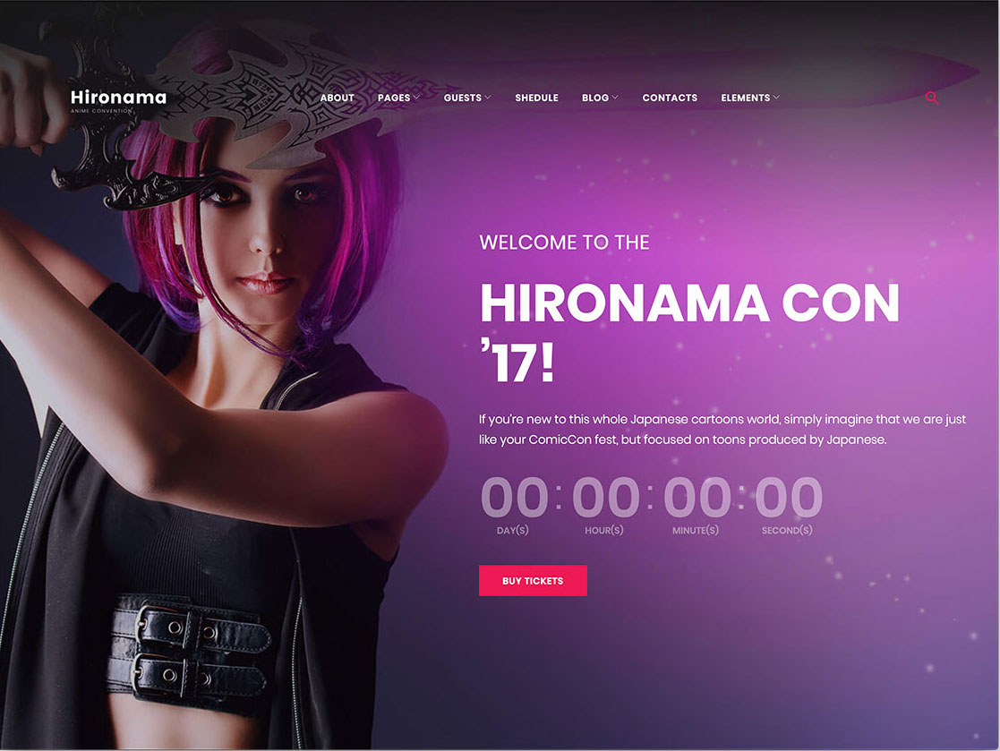
- ПУРПУРНЫЙ (#800080) - красный + синий
- СИРЕНЕВЫЙ (#c8a2c8) - бледно-фиолетовый
- Между красным и синим, мадже́нта
- Модный, дерзкий, выплеск энергии, косметика, гламур
- Творческий
- В тренде 2018-го
Нейтральные цвета
Можно использовать черно-белый дизайн без дополнительных цетов вообще (тренд 2021 года, colorless Web-design), цвета будут в изображениях, либо их не будет вовсе.
БЕЛЫЙ
Часто как цвет фона. Трендовый для минимализма. Блоги, книжные сайты. Отлично выделяет внутренний контент контрастных цветов
- Чистота, простота
- Пространство
- Добродетель, открытый
- Гигиена, медицина, типографичн�ость, газета
ЧЁРНЫЙ
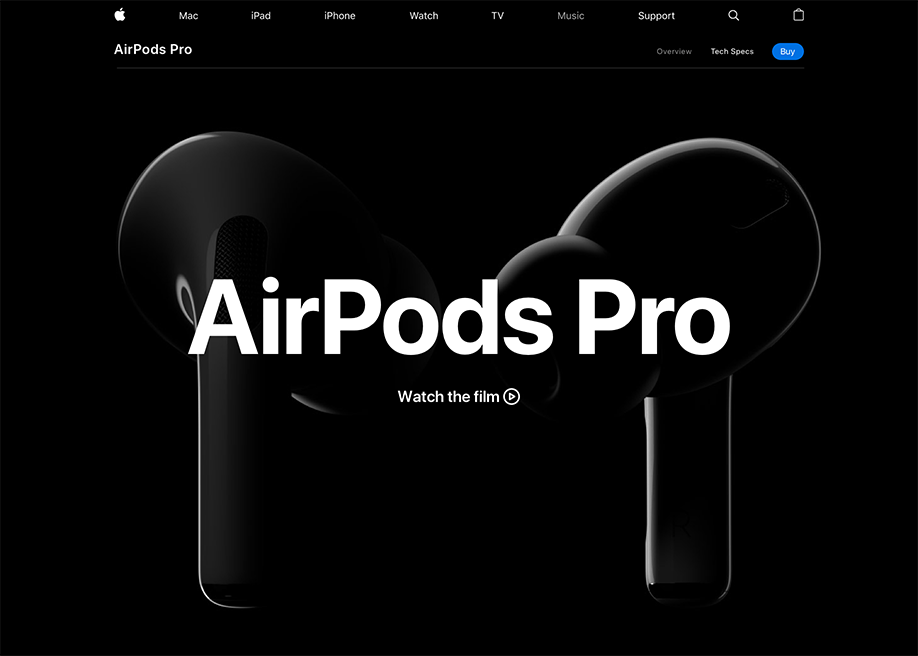
Чаще как цвет текста. Сайты для фотографов, видеографов. Нужно с ним поосторожнее в качестве фона. Комбинирование с оттенками серого
- Драматичный
- Элегантный, таинственный
- Лоск, Fashion, Стиль
- Тяжелый
СЕРЫЙ
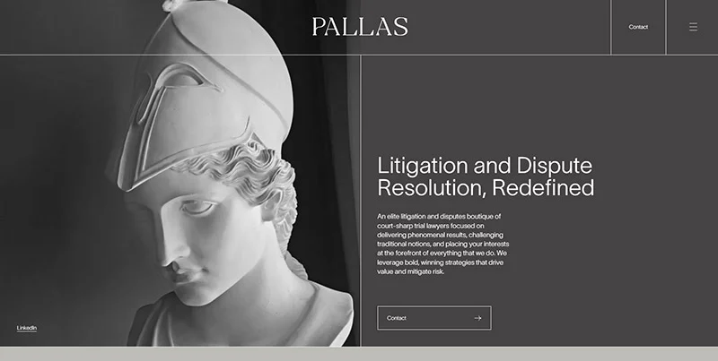
Лучше светло-серый. Светло-серый в качестве хорошего фона (близкий в белому). Тёмно-серый может смотреться грязно в качестве фона (с ним нужно быть поаккуратнее). Оттенки серого можно не учитывать в общем количестве цветов в дизайне.
- Чертёж, газета, эскиз, графика, карандаш
- Стабильный, Консервативный, минималистичный
- Грязный
КОРИЧНЕВЫЙ
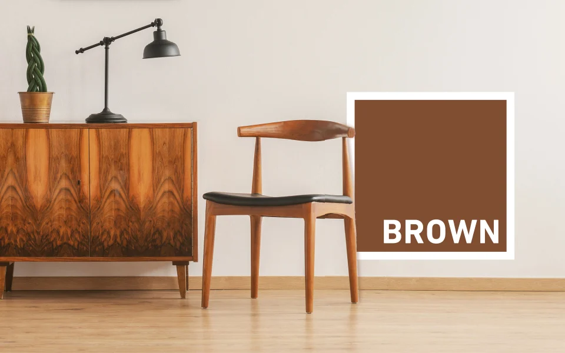
- ПЕСОЧНЫЙ (#c2b280) - пастельный коричневый
- СВЕТЛО-КОРИЧНЕВЫЙ (#b5651d)
- БРОНЗОВЫЙ (#cd7f32)
- Земля, песок, глина, дерево, кирпич, стройка
- Кофе, какао, шоколад
- Кожа, обувь, мебель
- Хорошо сочетаются с черным текстом и белым фоном (для акцента в простом тексте).
- Новостные ресурсы. Когда нужен акцент, который не вызывает эмоций, просто акцент. Хорошо для восприятия в типографике.
Контраст
- Тональный (ярко-синий, бледно-синий)
- Цветовой (Противоположные цвета на круге, вершины треугольника)
Цветовой круг
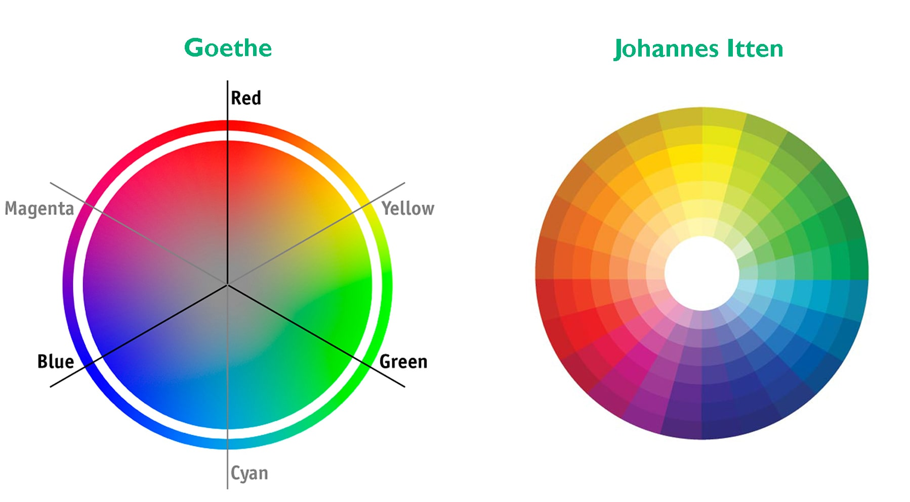
- Белый, Черный и Серый цвета НЕ включены в цветовой круг. (нейтральные тона, сочетаются со всеми цветами)
- Нужно научиться выделять из фото один основной цвет
- Сочетение 2 или 3 цветов является оптимальным, не должно быть много разных цветов, если есть 4-ый цвет, то его должно быть менее 3%
Виды цветовых гармоний
-
Противоположные цвета
1 основной комбинируется с 1 противоположным цветом. Жёлтый - Синий. Красный-оранжевый - Циан. Маджента - Зелёный
-
Комбинирование цветов
1 основной и 2 противоположных цвета
-
Аналоговая гармония
1 основной цвет с 2 соседними вариациями
-
Триада
1 основной и 2 дополнительных цвета, составляющих вершины равностороннего треугольника